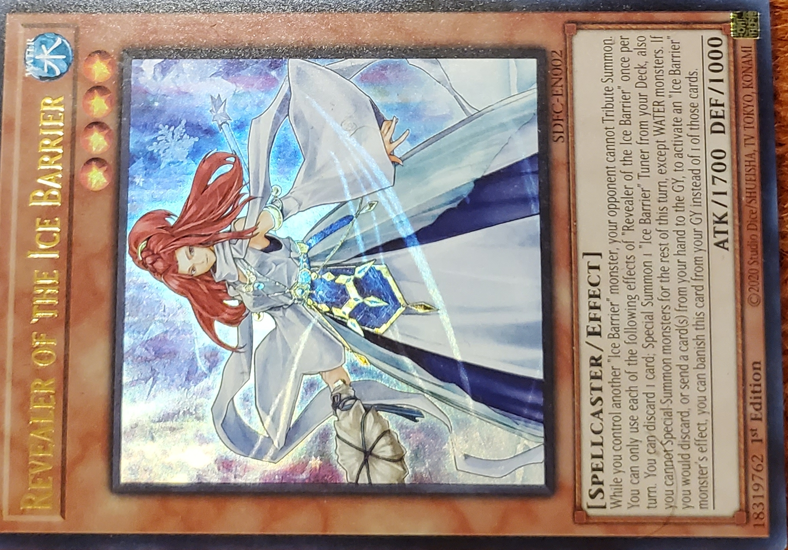

Revealer of the Ice Barrier

Water
Level: 4
Spellcaster
Effect
Atk/1700 Def/1000
While you control another "Ice Barrier" monster, your opponent cannot Tribute Summon. You can only use each of the following effects of "Revealer of the Ice Barrier" once per turn. You can discard 1 card; Special Summon 1 "Ice Barrier" Tuner from your Deck, also you cannot Special Summon monsters for the rest of this turn, except WATER monsters. If you would discard, or send a card(s) from your hand to the GY, to activate an "Ice Barrier" monster's effect, you can banish this card from your GY instead of 1 of those cards.